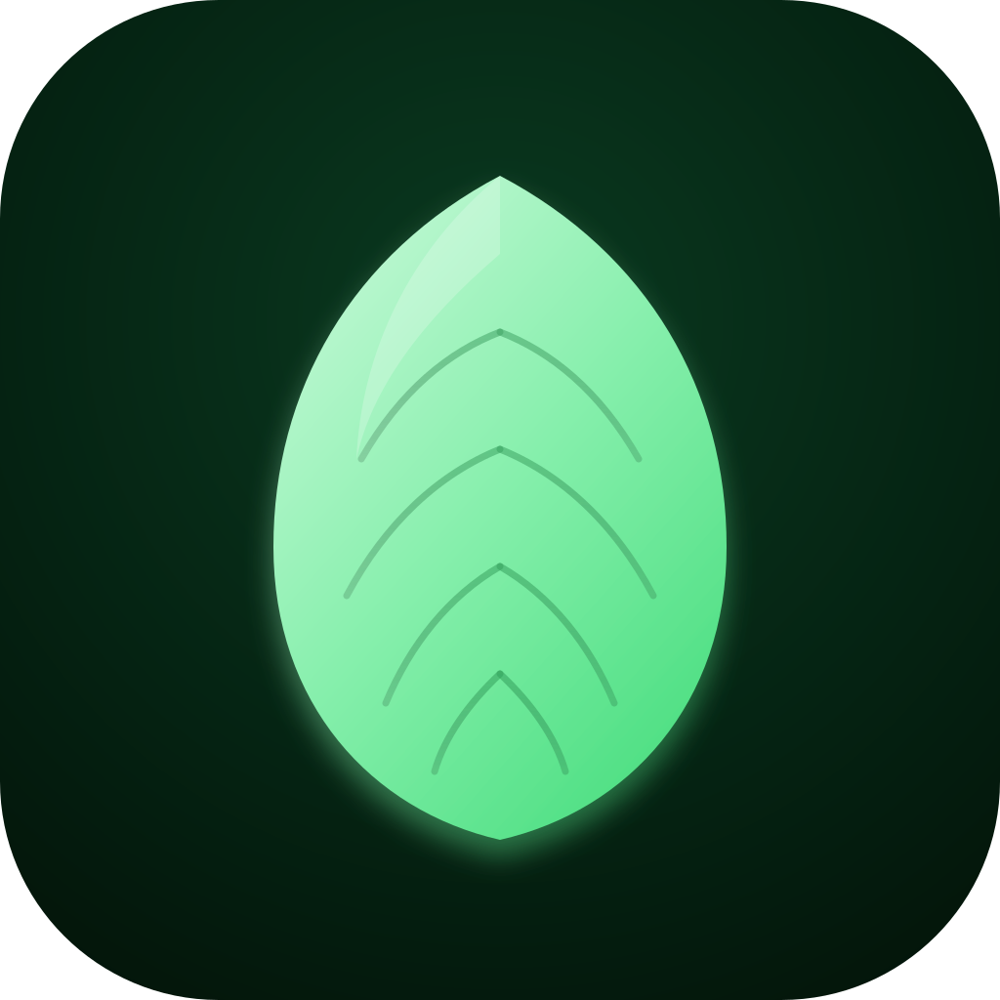

Rascunho vetorial. Você aprova antes do build do TWA.
Folha geométrica simétrica, gradient verde, sombra suave.

Android pode cortar o ícone em círculo, squircle ou rounded. A folha precisa ficar dentro da safe area (~80% central).
Se aprovar, eu gero PNGs (192/512/1024) via workflow e troco
no manifest.json.